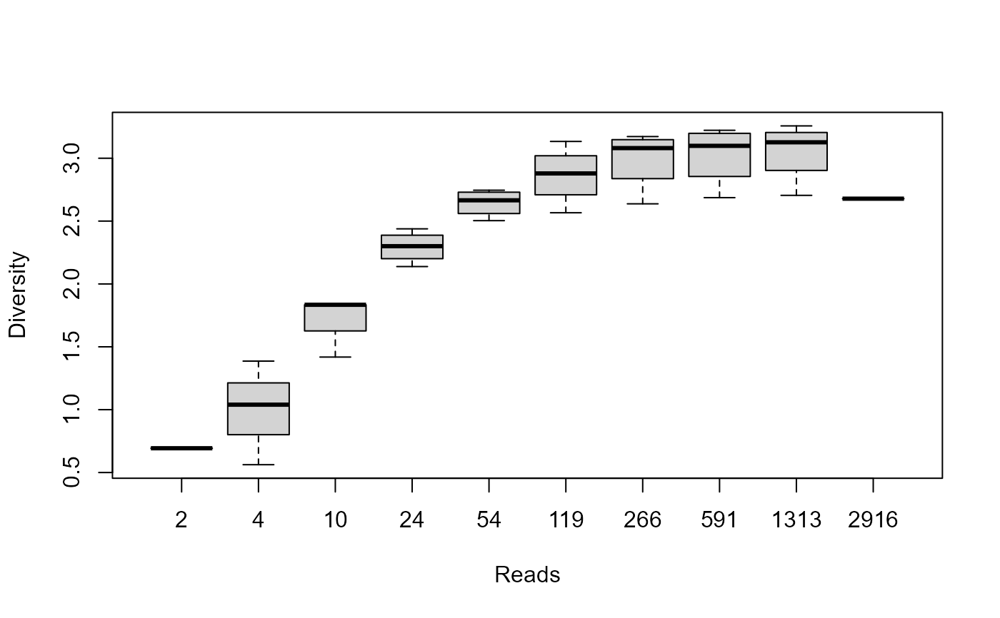

Estimate the diversity of each sample.
Arguments
- biom
A
matrix,simple_triplet_matrix, orBIOMobject, as returned from read_biom. For matrices, the rows and columns are assumed to be the taxa and samples, respectively.- rarefy
Control how/whether rarefactions are done prior to alpha diversity computations. Options are:
FALSEUse each sample's current set of observations without applying any rarefaction. (Default)
TRUEAutomatically select and apply a single rarefaction.
"multi","multi_log","multi_even"Automatically select and apply multiple rarefactions.
"multi"provides"multi_log"at the low end and"multi_even"at the high end.- integer vector
Rarefy at the specified depth(s).
- metrics
Character vector of one or more of the following:
Depth,OTUs,Shannon,Chao1,Simpson,InvSimpson. Non-ambiguous abbreviations are also accepted. The default,all, returns all of them.- long
Pivot the returned data to long format?
- FALSE
Each metric has its own column. (Default)
- TRUE
"Sample", "Metric" and "Diversity" are the columns returned. Rows are added to attain all combinations of samples x metrics.
- md
Include metadata in the output data frame? Options are:
FALSEDon't include metadata. (Default)
TRUEInclude all metadata.
- character vector
Include only the specified metadata columns.
- safe
Should autogenerated columns be prefixed with a "." to avoid conflicting with metadata column names? (Default: FALSE)
Value
A data frame of four diversity values for each sample in
biom. The column names are Sample, Depth and
the diversity metrics: OTUs, Shannon, Chao1,
Simpson, and InvSimpson. The row names are the sample names, except when multiple rarefactions are done.
Examples
library(rbiom)
ad <- adiv_table(hmp50)
head(ad)
#> Sample Depth OTUs Shannon Chao1 Simpson InvSimpson
#> HMP01 HMP01 1660 49 1.741153 59.08333 0.5668414 2.308623
#> HMP02 HMP02 1371 75 2.587403 104.38889 0.8133914 5.358811
#> HMP03 HMP03 1353 75 2.950982 90.04167 0.8936622 9.403996
#> HMP04 HMP04 1895 83 3.255785 93.32143 0.9323645 14.785121
#> HMP05 HMP05 3939 67 1.462651 127.75000 0.5252255 2.106263
#> HMP06 HMP06 4150 105 3.087615 131.88889 0.9103916 11.159668
biom <- subset(hmp50, `Body Site` == "Saliva" & Age < 26)
ad <- adiv_table(biom, "multi")
boxplot(Shannon ~ Depth, data=ad, xlab="Reads", ylab="Diversity")
